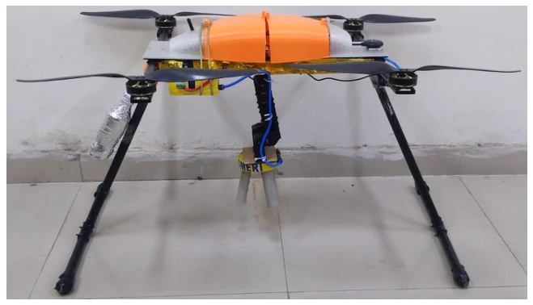
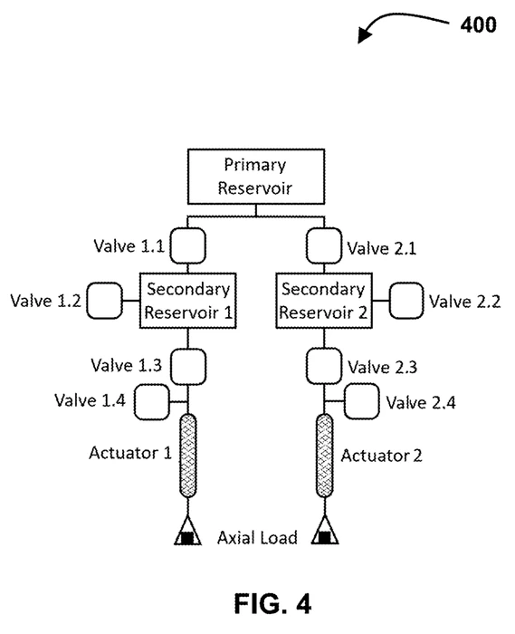

Development of an Autonomous UAV Integrated with a Manipulator and a Soft Gripper
13th Asian Control Conference (ASCC)
Jeju, South Korea · pp. 2212–2217
Soft robotics/2019–2022
A quadrotor, two-DoF manipulator, and pneumatic soft gripper
CSIR–CMERI · Indo–Korea Joint Network Centre on Robotics
The project
Aerial manipulation joins two demanding problems: maintaining a flying platform and making useful contact with an object. This collaborative project integrates an H-frame quadrotor with a two-DoF manipulator and a three-finger pneumatic soft gripper. Reinforced silicone fingers provide a compliant grasping interface, while onboard pneumatic hardware makes the end effector independent of a stationary air line.
Evaluation combines integrated hardware development, bench grasping of delicate objects, pneumatic characterization and outdoor flight. The bench tests make gripper contact and finger behavior visible; the field demonstrations show operation of the assembled aerial platform. Grasping and flight are presented as separate experiments.
Quadrotor–manipulator integration
The H-frame quadrotor provides space for a two-DoF manipulator, soft-gripper assembly, electronics, and pneumatic hardware. CAD and hardware views show how these components are arranged, while mission and simulation material support development of the complete platform.
Integration requires the manipulator and its pneumatic payload to be treated as part of the aircraft rather than as an isolated end effector. The project’s evidence therefore spans component design, assembled hardware, and flight testing, with credit retained at the collaborative-system level.
Reinforced pneumatic fingers
Three reinforced silicone fingers bend under pneumatic actuation to surround an object. Fabric strain-limiting layers and reinforcement shape the deformation, providing the grasping motion used by the assembled end effector.
Bench experiments show the gripper handling objects with different shapes and delicate surfaces. The gripper is manually positioned during these close-up demonstrations, making finger deformation and compliant contact visible independently of aircraft motion.
Reservoirs, valves, and pressure feedback
The reported aerial system combines stored compressed air, valves, pressure sensing, and PWM-based regulation for the gripper. The paper describes a 350 mL reservoir operated at 400 kPa and reports repeated grasping cycles under that configuration, connecting the soft end effector to a finite onboard pneumatic resource.
A separate CAD configuration shows a primary/secondary-reservoir revision, with 750 mL and 350 mL bottles. This differs from the paper’s tested single-reservoir setup and connects the project to the broader work on two-stage pneumatic supply architectures.
Component and platform demonstrations
The research combines delicate-object bench grasps with outdoor operation of the complete aircraft. The two views answer different engineering questions: whether the compliant fingers can hold an object, and whether the integrated platform can be operated in flight with its mounted hardware.
Wide-view flight footage shows the assembled platform operating outdoors and conveys its physical scale. Together with the close-up bench tests, these demonstrations connect aerial integration with compliant object handling. [Higher-resolution task footage can be added in a later revision.]
Connected work

13th Asian Control Conference (ASCC)
Jeju, South Korea · pp. 2212–2217

U.S. and Indian patent applications
U.S. 18/604,087, filed 13 March 2024; publication US 2024/0309891 A1, 19 September 2024. Related Indian application 202311017238, filed 14 March 2023.
Keep exploring

Soft robotics
From custom pneumatic muscles to characterization, learned models, and intrinsic feedback

Soft robotics
Reinforced silicone actuation for multidirectional bending and interaction sensing

Wearable robotics
Sensorized pneumatic muscles and rapid personalization for bilateral knee-flexion assistance